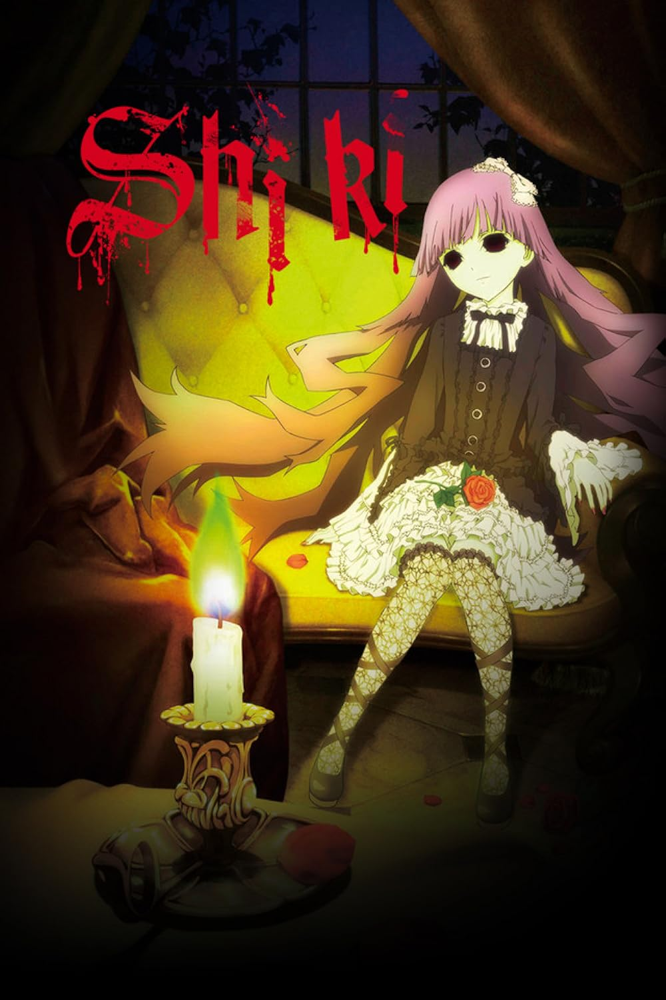

Life is idyllic and unassuming in the small town of Sotoba, a simple place where everyone knows everyone. However, tragedy strikes when Megumi Shimizu, a young girl with high aspirations, unexpectedly passes away from an unnamed illness. Over the torrid summer months, as more unexplained deaths crop up around the village, the town's doctor—Toshio Ozaki—begins to suspect that something more sinister than a mere disease is at play.